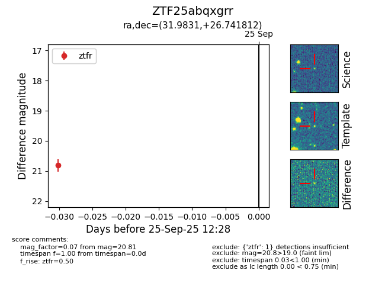

FINK: ZTF25abqxgrr
Lasair: ZTF25abqxgrr
ALeRCE: ZTF25abqxgrr
ZTF25abqxgrr (ztf,fink)
equatorial (ra, dec) = (31.9831,+26.74181)
galactic (l, b) = (143.3672,-33.07639)

last ztfr=20.81
1 ztfr detections